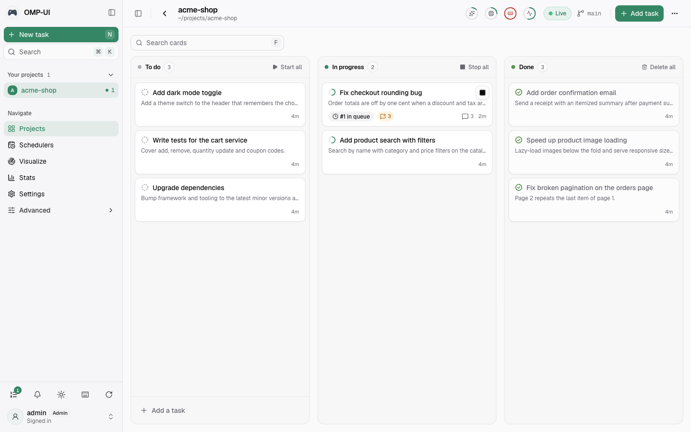
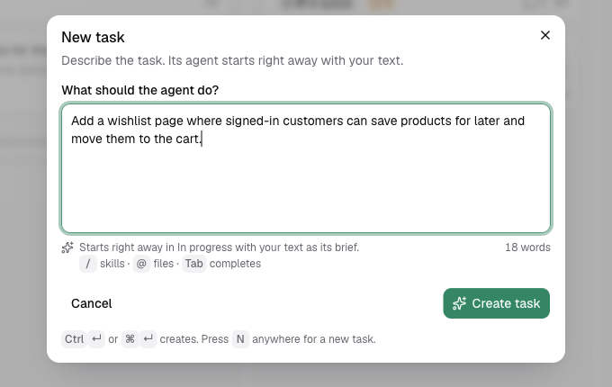

Website: omp-ui.quang.asia · npm package: omp-ui on npm · Releases: GitHub Releases

#Features
- OMP kanban board. Cards move through To do, In progress and Done as omp agents work on them.
- OMP workflow from plan to pull request. Describe the idea, an omp agent builds it, you review it through comments, then ship it as a PR or a push. Conflicts with the base branch are resolved automatically.
- OMP web UI on any device. Watch agent output live in the browser, on desktop or phone.
- Self-host OMP in one command.
npx omp-uistarts it under pm2 with SQLite by default. Docker is supported too. - Developer-friendly. A CLI, a REST API, keyboard shortcuts, and GitHub pull requests or GitLab merge requests.
- Schedulers and stats. Recurring cards on a cron schedule, plus usage and cost stats.
- Cluster mode. Spread agent runs across several machines (details).
- Open source. MIT licensed.
#Screenshots
The board: cards move through To do, In progress and Done as agents work on them.

Card detail: steer the agent with feedback comments and follow its run live.

Stats: running agents, AI spend, token usage and host health.

New task: describe the work in plain text and the agent starts right away.

Mobile: follow and steer your agents from a phone.
#Requirements
- Node.js 22.13 or newer
- omp, installed and signed in:
curl -fsSL https://omp.sh/install | sh
omp # run once and sign in to an AI provider
#Quick start: self-host OMP-UI
npx omp-ui
This one command sets everything up, starts OMP-UI in the background with pm2 and prints its URL. It asks for a password for the admin account, or generates one and prints it. Open the URL, sign in and follow the setup wizard.
To install it permanently:
npm i -g omp-ui
omp-ui
Or install a build straight from GitHub Releases (every push to main publishes one):
npm i -g https://github.com/quangpl/omp-ui/releases/latest/download/omp-ui.tgz # latest release
npm i -g https://github.com/quangpl/omp-ui/releases/download/nightly/omp-ui.tgz # latest main build
Settings and data live in ~/.omp-ui. SQLite is the default database, so you don't need to set one up.
If npm's global bin folder is not on your PATH (common with Homebrew's node@22), the install links omp-ui into a folder that is, such as /usr/local/bin or ~/.local/bin, and prints a one-line command that adds the folder to your shell config and reloads it. Run that command and omp-ui works right away. You can also run it yourself:
echo "export PATH=\"$(npm prefix -g)/bin:\$PATH\"" >> ~/.zshrc && source ~/.zshrc
#Basic commands
| Command | What it does |
|---|---|
omp-ui |
Set up and start OMP-UI |
omp-ui status |
Check whether it is running and show its URL |
omp-ui stop / start / restart |
Stop, start or restart the server |
omp-ui logs -f |
Follow the server log |
omp-ui open |
Open OMP-UI in your browser |
omp-ui config set port 8080 |
Change a setting (port, data-dir, db-url), then run restart |
omp-ui doctor |
Check Node.js, omp, git, gh and pm2 |
omp-ui update |
Update to the latest version and restart |
omp-ui help |
List every command |
#The OMP workflow on the kanban board
- Create a project. Pick a folder or clone a Git repository.
- Add a card. Describe the task in your own words, and an agent starts working on it.
- Give feedback. Comment on the card. The agent reads your comments and keeps going.
- Ship it. Click Create PR, Push to main or Push to current branch.
#Open the OMP web UI from anywhere
OMP-UI runs commands on your machine. Before exposing it, set a strong admin password with omp-ui passwd.
#Tailscale (private, recommended)
Reach OMP-UI only from your own devices, over HTTPS:
tailscale serve --bg 3000
Open https://<machine-name>.<tailnet>.ts.net on any device in your tailnet. To share it with people outside your tailnet, use tailscale funnel --bg 3000 instead.
#Cloudflare Tunnel
To get a temporary public link right away:
omp-ui public # prints an https://….trycloudflare.com link
omp-ui public stop
The link changes every time it starts. For a permanent address on your own domain, create a named Cloudflare Tunnel that points to http://localhost:3000.
If you use Tailscale, Cloudflare or another proxy, add VINEXT_TRUST_PROXY=1 to ~/.omp-ui/.env, then run omp-ui restart.
#Self-host OMP-UI with Docker
docker compose up -d # then open http://localhost:3000
#FAQ
What is OMP-UI? A web UI for omp. It runs omp agents on cards from an OMP kanban board and shows their work in the browser.
Is there an official OMP UI or OMP web interface? omp itself is a terminal tool. OMP-UI is an open-source OMP web UI built on top of it.
Can I self-host OMP?
Yes. OMP-UI runs on your own machine or server: npx omp-ui, pm2 or Docker. Your code and data stay with you.
How does the OMP workflow work? Plan, build, review, ship: write a card, an omp agent builds it in your repository, you review it through comments, then you open a pull request or push.
#Learn more
- Advanced guide: every feature, the full CLI, PM2, systemd, Docker, databases, clustering and configuration.
- API reference
- Cluster mode
- Changelog
- Security policy
#Contributing
See CONTRIBUTING.md and the Code of Conduct.
pnpm install
pnpm dev
pnpm test